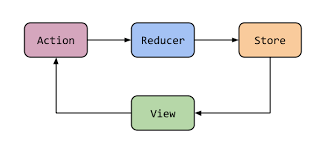

概述
对于架构，我自己也一知半解，在网上搜了一些资料，然后研究了下实际项目，有了自己的一些理解。架构本身倒是可以顾名思义吧，而且可能不同的人对于项目架构的风格和习惯不一样，但是底层的思想应该都是类似的。架构是一个很笼统的概念，上至框架选型下至业务代码都能称为架构的一部分。从基础逻辑出发的话，在真正涉及架构之前，我想应该是需要对面向对象及设计原则有一定的理解，进而结合 Android 如 MVVM, MVP 等思想，基础与理论理解清楚了，架构就在日常的开发中，多思考，多结合理论与实际，一点一点地积累起来了。架构不是一蹴而就的，在这方面我勉强算是刚入门吧，好好学习，天天向上～
面向对象和面向过程：
- 面向对象：面向对象是一种风格，会以类作为代码的基本单位，通过对象访问，并拥有
封装、继承、抽象、多态四种特性作为基石，可让其更为智能。 - 面向过程：分析出解决问题所需要的步骤，然后用函数把这些步骤一步一步实现，使用的时候一个一个依次调用就可以了，更侧重于功能的设计。
UML图
继承、泛化、实现关系体现的是一种类与类、或者类与接口间的纵向关系；其他关系则体现的是类与类、或者类与接口间的引用、横向关系，是比较难区分的，有很多事物间的关系要想准备定位是很难的，这几种关系都是语义级别的，所以从代码层面并不能完全区分各种关系。
总的来说，后几种关系所表现的强弱程度依次为: 组合 > 聚合 > 关联 > 依赖。
UML 即 Unified Model Language, 是一种建模语言，也是标准建模语言。在软件开发中，当系统规模比较复杂时，需要用图形抽象地来表达复杂的概念，让整个软件设计更具有可读性，可理解性，以便尽早发现软件设计时存在的潜在问题，从而降低开发风险。同时，也极大地方便了业务人员与开发人员之间的交流。
UML建模时常见的图：用例图，类图，对象图，活动图，状态图，时序图，协作图，组件图，部署图。主要看看类图。
泛化/继承
泛化和继承其实是一个逆过程，泛化就是由子类抽象出一个父类，而继承就是由父类具体化一个子类。
泛化关系用一条带空心箭头的直接表示（A继承自B）：

实现
指的是一个class类实现interface接口（可以是多个）的功能；实现是类与接口之间最常见的关系；在Java中此类关系通过关键字implements明确标识。
实现关系用一条带空心箭头的虚线表示：

组合
组合也是关联关系的一种特例，他体现的是一种contains-a的关系，这种关系比聚合更强，也称为强聚合；他同样体现整体与部分间的关系，但此时整体与部分是不可分的，整体的生命周期结束也就意味着部分的生命周期结束；比如你和你的大脑；表现在代码层面，和关联关系是一致的，只能从语义级别来区分。

聚合
聚合是一种强的关联关系，他体现的是整体与部分、拥有的关系，即has-a的关系，此时整体与部分之间是可分离的，他们可以具有各自的生命周期，部分可以属于多个整体对象，也可以为多个整体对象共享；比如计算机与CPU、公司与员工的关系等；表现在代码层面，和关联关系是一致的，只能从语义级别来区分。
聚合关系用一条带空心菱形箭头的直线表示，如下图表示A聚合到B上，或者说B由A组成：

关联
关联是类与类之间的联接，使一个类知道另一个类的属性和方法，比如，乘车人和车票之间就是一种关联关系；学生和学校就是一种关联关系；关联可以是双向，也可以是单向的，一般使用成员变量来实现。
关联关系默认不强调方向，表示对象间相互知道，如果特别强调方向，如下图，表示A知道B，但B不知道A：

依赖
依赖关系是类与类之间的联接。一个类依赖于另一个类的定义。如，一个人(Person)可以买车(Car)和房子(House)，Person类依赖于Car和House的定义，因为Person引入了Car和House。一般而言，依赖关系在Java语言中体现为局部变量，方法形参，或者对静态方法的调用。与关联关系不同的是，它是一种临时性的关系，通常在运行期间产生，并且随着运行时的变化；依赖关系也可能发生变化。
依赖关系是用一套带箭头的虚线表示，描述一个对象在运行期间会用到另一个对象的关系，如下图表示A依赖于B：

示例

六大设计原则
面向对象设计原则是 OOPS(Object-Oriented Programming System, 面向对象程序设计系统) 编程的核心。
单一责任原则
单一责任原则：让一个类只做一种类型责任，当这个类需要承当其他类型的责任的时候，就需要分解这个类，强调高内聚。
即便是经验丰富的程序员写出的程序，也可能会违背这一原则，因为有职责扩散，即因为某种原因，职责 P 被分化为粒度更细的职责 P1 和 P2。所以使用面向对象语言开发时，不要急着写代码，优先考虑下模块、类、函数等的设计是否足够单一。
开闭原则
开闭原则：对扩展开放，对修改关闭。充分诠释 抽象、多态 特性，又是多数行为型设计模式的基础，遍布于各大优秀框架之中，是最重要的一条设计原则。
举例：做数据库操作，可以抽象出一个 CRUD 接口：
1 | interface IDao { |
如果一开始选择直接写 SQL 语句实现，则实现 IDao 接口即可，后续如果需要使用 ORM 框架如 ROOM 的话，也只需重新实现该接口，外部业务层基本不需要改动。
迪米特法则
迪米特法则：通俗来讲就是一个类对自己依赖的类知道的越少越好。也就是说，对于被依赖的类来说，无论逻辑多么复杂，都尽量地的将逻辑封装在类的内部，对外除了提供的 public 方法，不对外泄漏任何信息。
迪米特法则根本思想是强调了类之间的松耦合，类之间的耦合越弱，越有利于复用，一个处在弱耦合的类被修改，对有关系的类造成的影响比较小，也就是说，信息的隐藏促进了软件的复用。
接口隔离原则
接口隔离原则：建立单一接口，不要建立臃肿的接口，尽量细化接口。在程序设计中，依赖几个专用的接口要比依赖一个综合的接口更灵活。
接口隔离原则与迪米特法则目的很相似，都可以降低模块间依赖关系。但接口隔离更侧重于设计单一接口，提升复用性并间接降低模块间依赖关系，而迪米特法则是直接降低模块间依赖关系。
运用接口隔离原则，一定要适度，接口设计的过大或过小都不好。设计接口的时候，只有多花些时间去思考和筹划，才能准确地实践这一原则。
里氏替换原则
里氏替换原则：设计子类的时候，要遵守父类的行为约定。父类定义了函数的行为约定，子类可以改变函数的内部实现逻辑，但不能改变函数原有的行为约定。
依赖倒置原则
依赖倒置原则：高层模块(使用者)不应依赖低层模块(被使用者)，它们共同依赖同一个抽象，抽象不要依赖具体实现细节，具体实现细节依赖抽象。即针对接口编程，不要针对实现编程。
在实际编程中，我们一般需要做到如下3点：
- 低层模块尽量都要有抽象类或接口，或者两者都有。
- 变量的声明类型尽量是抽象类或接口。
- 使用继承时遵循里氏替换原则。
Clean架构
什么是Clean架构
Clean 架构是由 Uncle Bob 在 2012 年发表的针对 Web App 的架构设计，他提出只需秉持分层与依赖规则的原则，依赖需要遵循内层不能依赖外层的规则。

这张图解释如下：
- Enterprise Business Rules: 业务对象
- Application Business Rules: 用于处理业务对象，是业务逻辑和 DataMapper(让 UI 层拿到的数据能直接使用) 所在，也称为 Interactor
- Interface Adapters: 接口转换，Presenters 和 Controllers 就在这一层
- Frameworks and Drivers: 这里是所有具体的实现了
看看 Clean 与 MVP 的关系(类比 MVVM 架构)：

项目实例
下面通过一个实例在 Android 中应用 Clean 架构。
Data层
1 | class HelloService { |
这里 HelloRepository 实现了 IRepository 接口，但是 IRepository 并不是数据层的，它是 domain 层的接口，即以接口进行关联，但内容独立。
Domain层
1 | interface IRepository { |
Domain 层应该用依赖注入的方式拿到 IRepository 实例，这样 Domain 层则跟 Data 层没有直接关联了。
View&ViewModel层
1 | // ViewModel |
小结
优点
- 测试更容易
- 漏洞更容易被隔离
- 新功能也很容易添加
- 代码更易读和可维护
- 单向依赖、数据驱动编程
缺点
- 结构复杂
- 粒度太细
- Usecase 的复用率极低
- 急剧的增加类和重复代码
建议大型项目才考虑使用该架构。
常见架构(MVC, MVP, MVVM)
一个 App 最重要的是两个角色: Model 和 View。Model 决定了 App 的数据，而 View 决定怎么展示这些数据，其他的框架或组件基本上都是用来处理这两者之间的交互关系的。因此一个 App 的架构主要需要处理两个任务：
- 更新 Model, 即如何处理 View Action?
- 更新 View, 即如何将 Model 的数据应用到 View 上?
基于此，在 Android 上一般有如下三种常用架构：
- MVC: Model-View-Controller, 作为 Controller 层的 Actvity/Fragment 等又充当了 View 的角色，代码过于臃肿，同时 Activity 直接操作 Model，导致 View 层和 Model 层耦合，无法独立复用。
- MVP: Model-View-Presenter, Presenter 和 View 之间通过定义接口实现通信，当业务场景比较复杂时，接口的定义越来越多，且接口定义容易产生滥用，接口变化需要对应实现也发生变化。
- MVVM: Model-View-ViewModel, MVVM 解决了 MVP 的缺点，使得 ViewModel 和 View 之间不再依赖接口通信，而是通过 LiveData 和 RxJava 等这种响应式开发的方式来通信。
这里的响应式开发强调一种基于观察者模式的开发方式: View 订阅 ViewModel 暴露的响应式接口，接收到通知后进行相应逻辑，而 ViewModel 不再持有任何形式的 View 的引用，减少耦合，提高了可复用性。
| - | MVC | MVP | MVVM |
|---|---|---|---|
| 更新 Model | View(Controller) 直接操作 Model, View 和 Model 耦合严重 | View 通过 Presenter 操作 Model, View 与 Model 解耦 | View 通过 ViewModel 操作 Model, View 与 Model 解耦 |
| 更新 View | View 可操作 Model, 内部更新 | Presenter 通过接口通知 View 更新 | Presenter 通过响应式方式通知 View 更新 |
一般来说 LiveData 的用法: ViewModel 对 View 层仅暴露 LiveData 接口，在 View 层不允许直接更新 LiveData。因为一旦 View 层拥有直接更新 LiveData 的能力，就无法约束 View 层进行业务处理的行为。所以可以避免使用 DataBinding 来进行双向绑定。
1 | class LoginViewModel : ViewModel() { |
关于这三种架构的介绍可以参考: Android设计架构。
Redux架构
Redux 是前端开发中的一种架构，是 Flux 架构的一个变种，用来提供状态管理。我们在 Android 中也可以参考其设计思想，设计出符合 Android 使用场景的 Redux 架构，网上也有一些相关的开源代码库。
考虑一个场景，在一个 Feed 流中有许多视频，每个视频 item view 都会展示该视频的点赞数，点击进入视频详情页可以点赞，详情页展示新的点赞数，返回到 Feed 流时也能看到 item view 点赞数的变化。
首先返回到 Feed 流后重新进行网络请求得到最新的点赞数显然是不太可取的，那么就可以考虑在点赞的时候更新本地内存中存储的 Feed item 对象中的点赞数，至于这个 item 对象存储在哪里呢？谁能对它进行更改呢？此时可以考虑 Redux 架构的设计思路。
我们看一下 Redux 的几个对象：

单向数据流
数据流向从 Store 流向 View，不允许双向流动，单向数据流让所有状态的改变可追踪，易溯源。
唯一数据源SSOT(Single source of truth)
唯一数据源让整个应用状态都保存在一个对象(Store)中，保证各个页面数据展示的一致性。
状态是可读的
非可读的状态会带来一些问题：
- 多线程场景下，数据的随意修改容易引入线程安全问题
- 在响应式架构里，数据 state 的变化是可观察的，随意修改会破坏这种可观察性
Redux 只能通过返回一个新的 state 来更新数据状态，这个过程通过纯函数实现。
纯函数Reducer
不依赖外部、不影响外部：
- 不依赖外部变量，只依赖输入的参数，任何情况下，只要参数相同，函数返回值也总是相同的。
- 无副作用。纯函数不会修改参数，不会影响外部状态。
Repository模式
Repository 模式的概念来自于领域驱动开发(Domain Driven Design)。主要思想是通过抽象一个 Repository 层，对业务(领域)层屏蔽不同数据源的访问细节，业务层(ViewModel)无需关注具体的数据访问细节。
Repository 内部实现了对不同数据源的访问，典型的 DataSource 包括 remote service, cache, database 等。可以用不同的 fetcher 来实现。